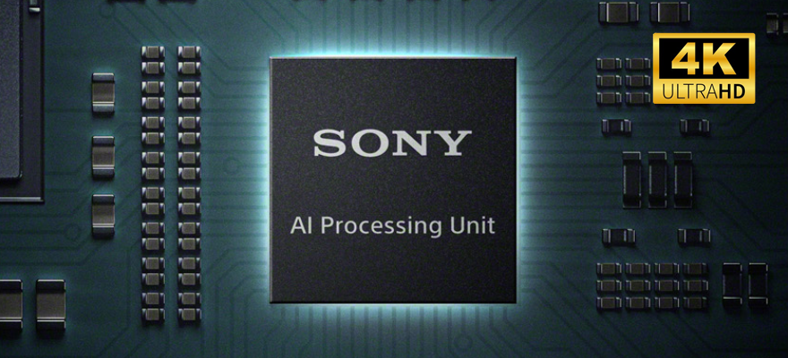
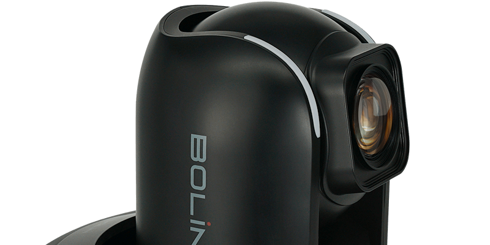

4K PTZ Camera
Professional
R9-420F
RED LINE BOLIN R9-420F는 스튜디오 방송, 라이브 프로덕션 및 전문 AV 애플리케이션용으로 설계된 고성능 전문가용 PTZ 카메라입니다, 부드러운 움직임과 최적화된 화질을 위해 설계되었으며 초당 최대 60프레임의 4K 해상도를 제공하여 라이브 이벤트, 스포츠 중계, 기업 프로덕션, 스튜디오와 같은 환경에서 부드러운 영상 촬영을 보장합니다.Red Line 시리즈
고품질, 저지연성, 저대역폭 IP 스트림을 제공하여 원격 프로덕션, 클라우드 스트리밍 및 하이브리드 방송 애플리케이션에 적합합니다.
-
R9-420F
20X Zoom Range,1/2.8 Inch 4K Sony Image Sensor, 4K60(2160p59.97), Full HD (1080/i59.94/p60) , 12G-SDI + SFP-SDI+HDMI2.0+IP, FAST HEVC, Ultra Low Latency, Low Bandwidth, FreeD Supported -
R9-230H
30X Zoom Range, Sony Image Block, Full HD (1080/i59.94/p60), 3G-SDI + SFP-SDI+HDMI+IP, Standard AVC/HEVC, Super Image Stabilizer, Low Light Performance, FreeD Supported -
R9-418F
1 Inch 4K Sony Image Block, 18X Zoom Range, 4K30(2160p29.97), Full HD (1080/i59.94/p60), 6G-SDI + SFP-SDI+HDMI+IP, FAST HEVC, Ultra Low Latency, Low Bandwidth, FreeD Supported


4K Sony Sensor
4K 이미지 센서를 탑재하여 보다 선명하고 저조도 촬영시에도 더욱 감소된 노이즈와 고화질 영상을 위한 넓은 수광 영역을 제공합니다. 놀라운 화질
829만의 높은 유효화소수로 피사체의 미세한 표현이 가능하며 주변 환경에 따라 전문가용 캠코더급 화질로 구현이 가능할 수 있습니다.

20x Optical Zoom
20배 줌은 광각 및 근거리 촬영 모두에서 선명도를 유지하고, 고급 이미지 신호 처리(ISP) 엔진은 색상 정확도와 저조도 성능을 향상시킵니다. 10비트 색심도
20배 줌은 광각 및 근거리 촬영 모두에서 선명도를 유지하고, 고급 이미지 신호 처리(ISP) 엔진은 색상 정확도와 저조도 성능을 향상시킵니다.
Preset 저장 및 호출
카메라의 앵글 위치값과 컬러, 화이트밸런스등의 메뉴값을 저장 및 호출할 수 있으며 자세 제품인 SMC-100 컨트롤러를 사용 시 최대 255개의 위치 프리셋을 손쉽게 저장하며 호출할 수 있습니다.Set.1
Set.2
Set.3
MODEL
Specifications
| Model | R9-230H |
|---|---|
| Image Sensor | 1/2.8 Inch 4K Sony Image Sensor |
| Zoom Range | 30X Optical Zoom |
| Resolution | Full HD (1080/i59.94/p60) |
| Outputs | 3G-SDI + SFP-SDI+HDMI+IP |
| Compression | Standard AVC/HEVC, Super Image Stabilizer, Low Light Performance, FreeD Supported |
| Model | R9-418F |
|---|---|
| Image Sensor | 1 Inch 4K Sony Image Block |
| Zoom Range | 18X Optical Zoom |
| Resolution | 4K30(2160p29.97), Full HD (1080/i59.94/p60) |
| Outputs | 6G-SDI + SFP-SDI+HDMI+IP |
| Compression | FAST HEVC, Ultra Low Latency, Low Bandwidth, FreeD Supported |
| Model | R9-420F |
|---|---|
| Image Sensor | 1/2.8 Inch 4K Sony Image Sensor |
| Zoom Range | 20X Optical Zoom |
| Resolution | 4K60(2160p59.97), Full HD (1080/i59.94/p60) |
| Outputs | 12G-SDI + SFP-SDI+HDMI2.0+IP |
| Compression | FAST HEVC, Ultra Low Latency, Low Bandwidth, FreeD Supported |